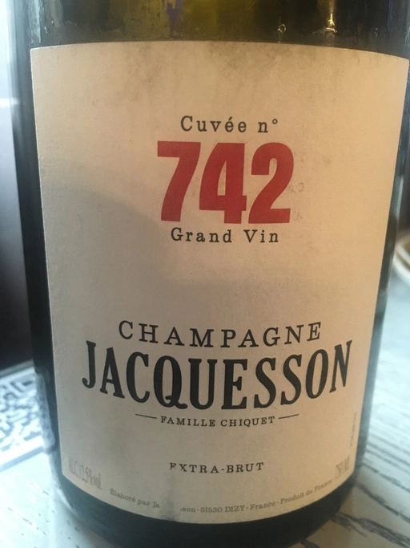
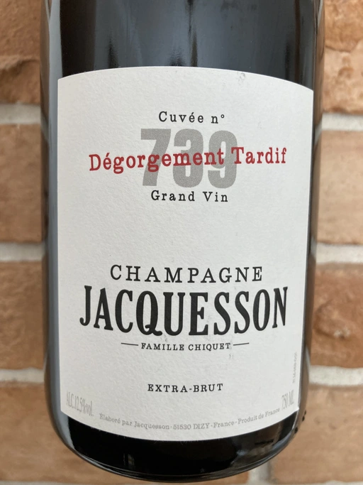

- Type
- White Sparkling, Extra brut
- Producer
- Jacquesson
- Base vintage
- 2016
- Disgorged in
- November 2020
- Spent on lees
- 36 months
- Location
- France, Champagne AOC
- Grapes
- Pinot Meunier, Chardonnay, Pinot Noir
- Alcohol
- 12.5
- Sugar
- 0.7
- Price
- 2054 UAH
- Cellar
- N/A
Ratings
2021-09-14 - 8.50
Tasted in 101 Bar after Na Uzbičči event. We decided to keep it going haha.
It’s not a secret that I love this producer. I started to appreciate Champagne with his Cuvée 742, so now I consider it my duty to drink every new release. Based on 2016, spent 36 months sur lie. Toast, citrus, white flowers, chalk, apple seeds. Fresh, expressive and delicious. Still young, needs more time in the bottle.
2022-05-14 - 8.50
Tasted in Carpathian Mountains from basic Spigelau glassware.
Even after 8 months since my last tasting, Cuvée 744 still seem too young. All those beautiful notes of citrus, white flowers, chalk, apple seeds and crème brûlée, but it lacks in the volume and persistence. So let’s wait and see how it evolves.
Related

Jacquesson
Cuvée 742 Extra Brut (2014) - NV

Jacquesson
739 DT - 2011

Jacquesson
Cuvee 743 Grand Vin (2015) - NV

Jacquesson
Cuvée 745 Grand Vin (2017) - NV

Domaine de La Borde
Pinot Noir Sous la Roche - 2018

Storm
Vrede Pinot Noir - 2017

Felton Road
Calvert Pinot Noir - 2019

François de Nicolay
Ladoix Les Briquottes - 2017